原発事故によって文化と技術の継承が途切れた葛尾村で、焼き物という営みをもう一度立ち上げる試み。
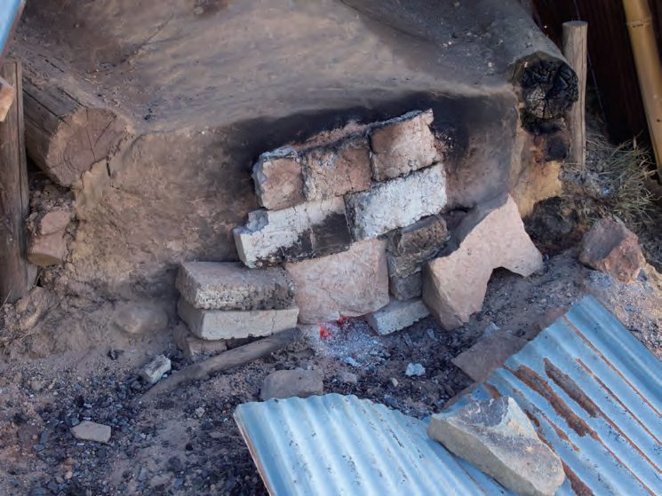
葛尾焼きプロジェクトは、原発事故により文化や技術の継承が困難となった福島県葛尾村で、村の土から焼き物を立ち上げる試みである。村民と共に継承者を育て、地域の技術と歴史を参照しながら、新しい産業としての確立を目指している。— 葛尾焼きプロジェクトについて
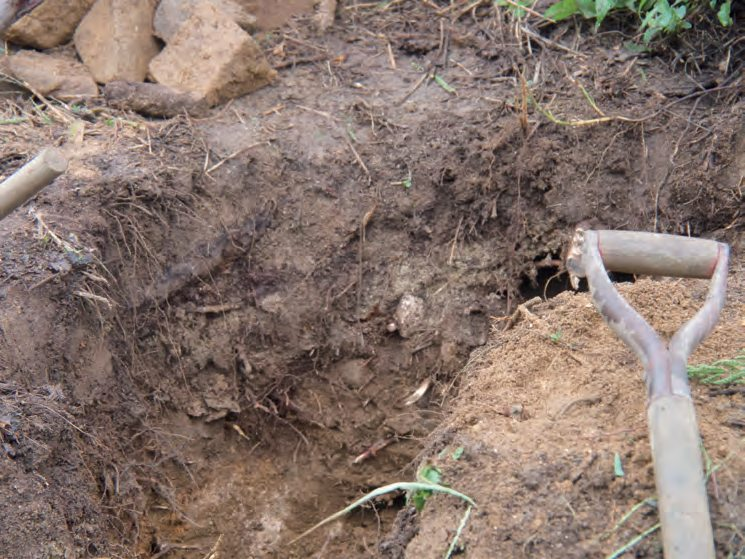
2024年、東日本大震災で被災した12市町村の復興を目的とした「ハマカルアートプロジェクト」への参加をきっかけに、福島県双葉郡葛尾村での制作がはじまった。約3週間（2024年12月14日〜2025年1月5日）にわたり村に滞在し、「復興の定義」「原子力災害の今」「福島の現状を他地域の人々に伝えること」をテーマに掲げながら、村の土を採取して成形・焼成を行った。
原発事故の影響により汚染土の問題が残る地域ではあるが、検査の結果、飲食物として使用しても問題のない放射線量であったため、葛尾村の粘土を作品に用いることができた。
帰還困難区域に指定された地域では、元の住民が土地に戻れない状況が続き、その土地に根ざした文化や歴史が継承されないまま失われていく可能性がある。愛知県で育った自分にとって当然だった粘土採取や技術の継承は、福島では当たり前のことではない。福島の土で窯元のあり方を考えることは、焼き物という文化と歴史をつないでいくことの重要性を、あらためて問い直す行為でもある。
葛尾焼きプロジェクトは、文化を保存・展示することを目的とするのではなく、次の4つの実践を通して「継承が起こり得る条件」を地域の中に構築することを目指している。
葛尾村内で土・粘土を採取する。地面を掘り、袋に詰め、乾かし、漉す。焼き物の出発点は、その土地そのものである。
村内に炭窯を新設し、古くから葛尾村に伝わる炭窯の技術を、村民の監修のもとで再現する。設備ではなく、関係性ごと村に残すための窯である。
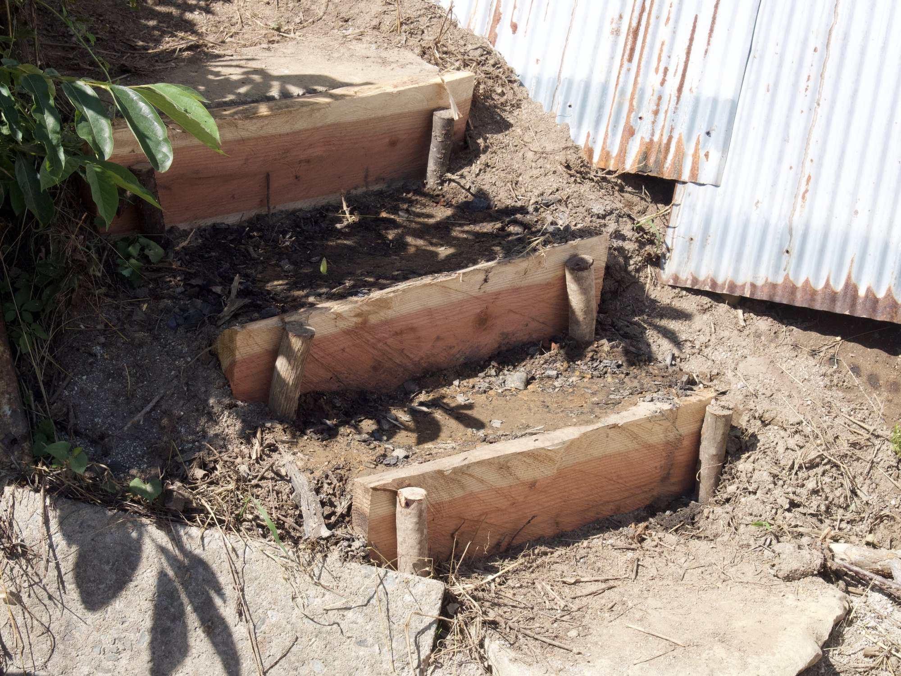
継承者となる村民を含む複数名へ向けたワークショップを、複数回にわたり実施。成形から焼成までの工程を、村の人々とともに共有し、可視化していく。
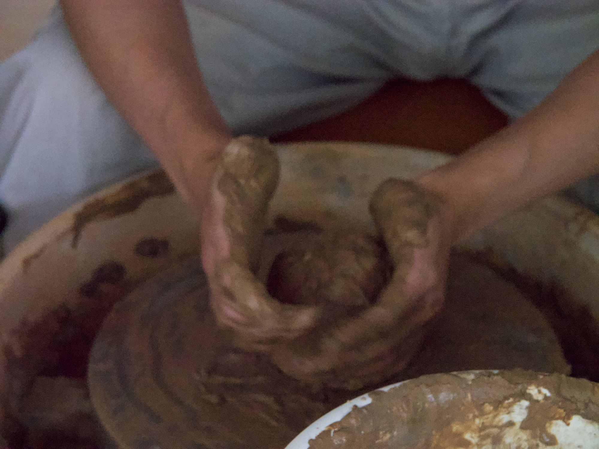
新設した炭窯を用いて焼成を行う。あわせて映像や文章による記録を制作し公開することで、次の継承者に向けたアーカイブとして残していく。
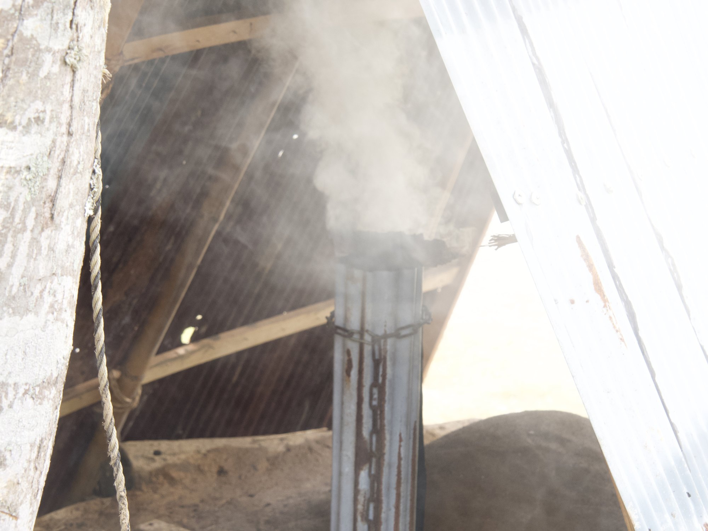
ハマカルアートプロジェクトに参加。葛尾村に滞在し、村の土を採取して成形・焼成を実施した。葛尾焼きを「大切なものを伝えていくための焼き物」と位置づけ、継承者となった村民を含む3名へ技術を伝えるワークショップを複数回開催。今後の継承者に向けた映像制作も行った。葛尾村復興交流館あぜりあでの展示を経て、旧双葉駅舎・道の駅なみえ・東日本大震災原子力災害伝承館でのサテライト展示、さらにギャラリーチフリグリ（仙台）、うちらの居間分館（東京）へと巡回した。
2期目となるこの年は、古くから葛尾村に伝わる炭窯の技術を村民の監修のもと新設し、その窯を用いて焼成を実施。成果報告会として展示を行った。葛尾村には縄文土器が出土した記録もあり、その歴史も踏まえながら、葛尾焼き後継者の育成をきっかけに村へ陶芸文化を根付かせることを目指している。
継続的にプロジェクトを行うことで、新しい産業としての確立を目指す。地域外の企業・団体との協働や、個人消費者向けの販売、ECサイトを通じた流通など、to B / to C 双方を見据えた制作・流通の構想が進行している。
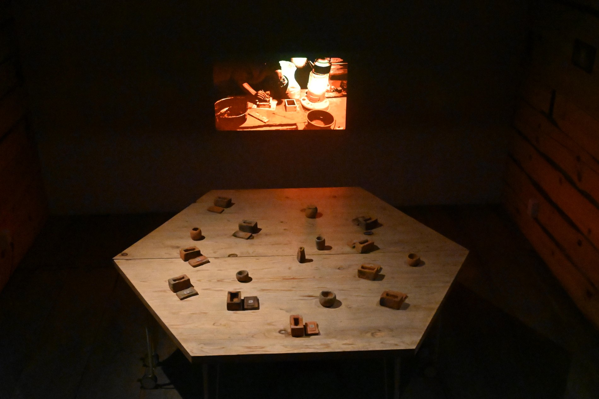
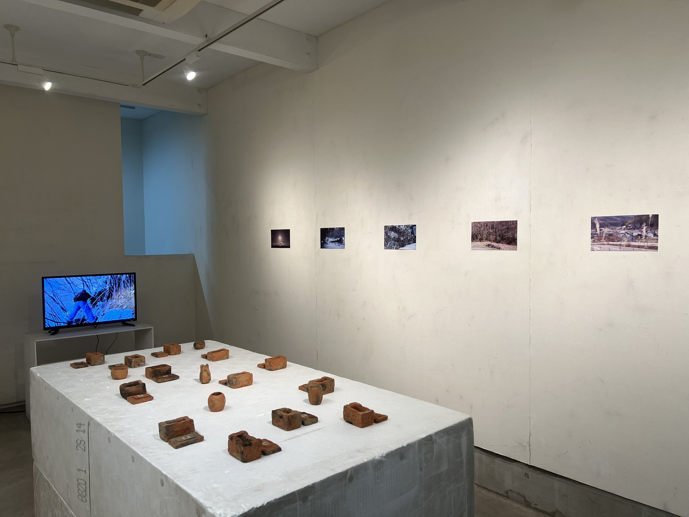
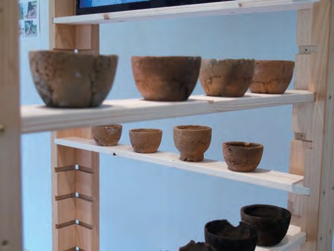
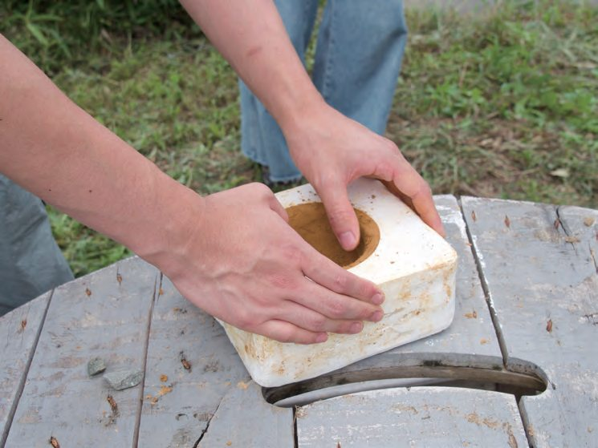
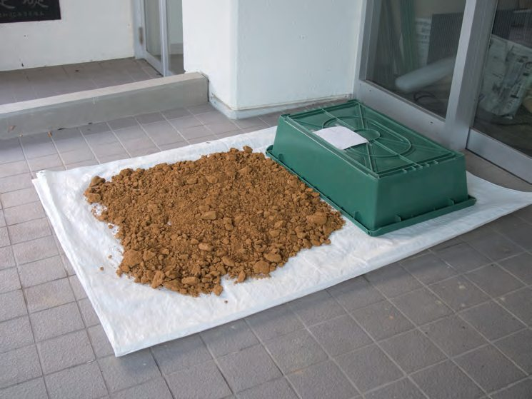
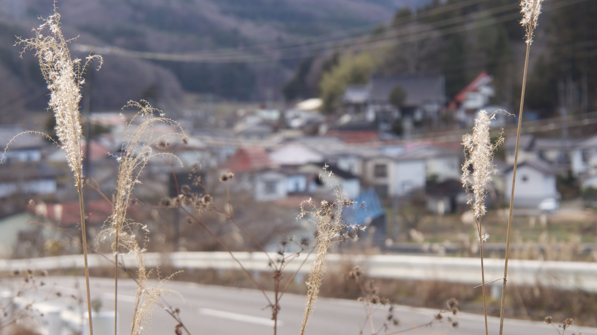
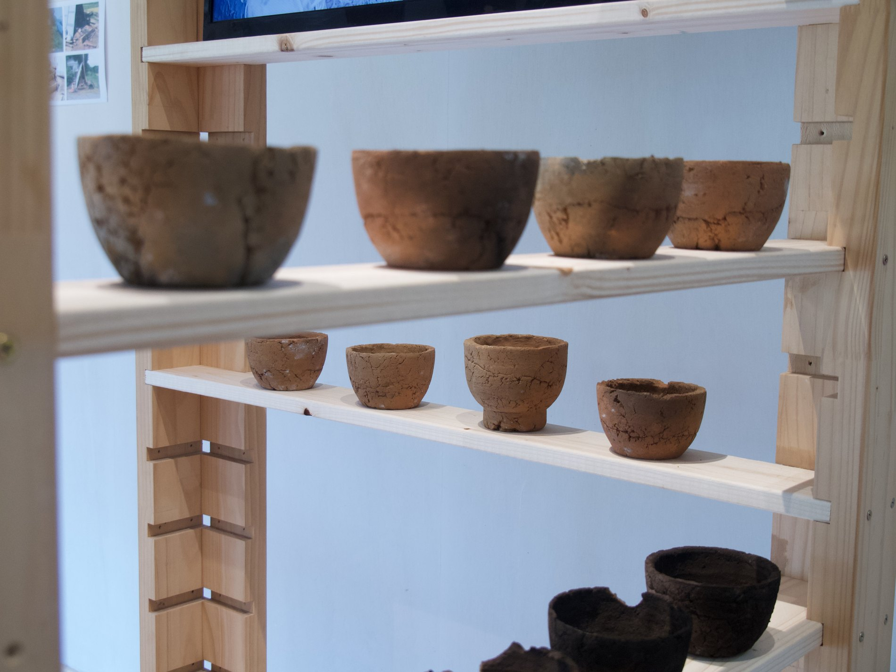
自身の役割は、この中の「ムーブメント」を形成する段階までと位置づけている。それ以降の展開は地域に委ねられるべきであり、最終的な目標は、自分の介入がなくとも地域の中で制作と経済が自律的に循環する状態をつくることにある。その実現は、ある種の喪失感を伴うかもしれない——しかし、その役割の移行を引き受けること自体が、このプロジェクトの重要な要素だと考えている。